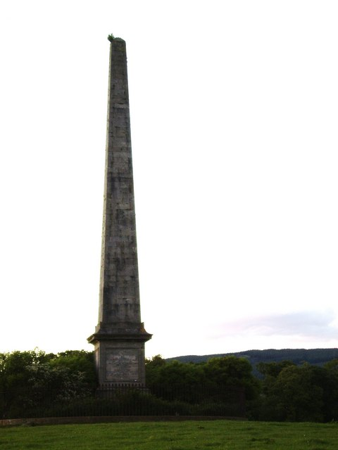
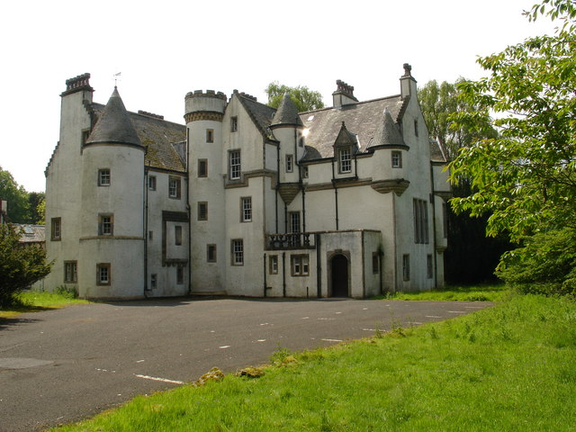
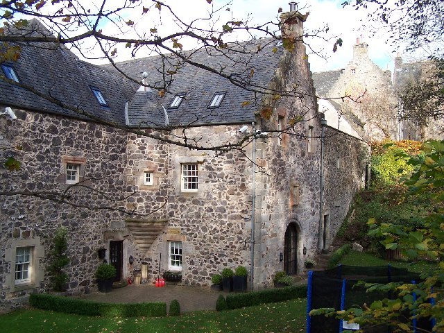

Visit Bishopton
Places to Stay
Mar Hall
Mar Hall (or Earl of Mar Hotel) is a luxury golf and spa resort situated just outside of Bishopton. The building was originally Erskine House, and was commissioned to be built by the 11th Lord Blantyre. In 2004, it was converted into a hotel. The hotel features a swimming pool, bar, gym and golf course and is surrounded by a 200 acre estate. It is also available for events such as weddings.
creative commons image source{kind=link}
Ingliston Country Club
Ingliston is a hotel and country club established in 2007. It features an equestrian centre, lodges, wedding suites, conference areas and Palomino's Restaurant.
Attractions
This monument was built to commemorate Robert Walter Stuart, the 11th Lord Blantyre. He served in the Napoleonic wars but was killed in Brussels in 1830.
 creative commons image source - Lairich RigDargavel house is a grade B listed building situated within the Royal Ordnance Factory Site. It was once owned by the entrepreneur Edward Steinkopff.
 creative commons image source - Raymond Okonski{kind=link}
Known locally as "Monkey House", Formakin Estate is a category A listed building, designed by Robert Lorrimer. It briefly operated as a visitor attraction but this was not successful.
 creative commons image source - William Craig{kind=link}